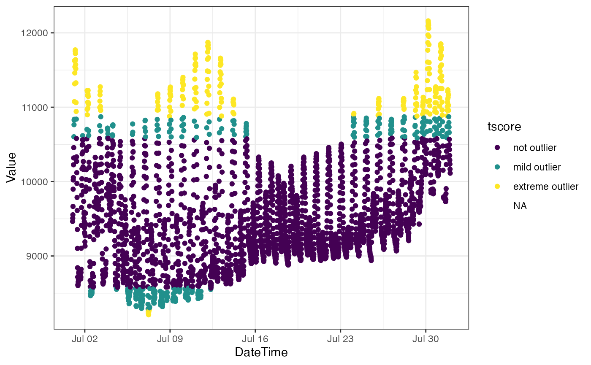
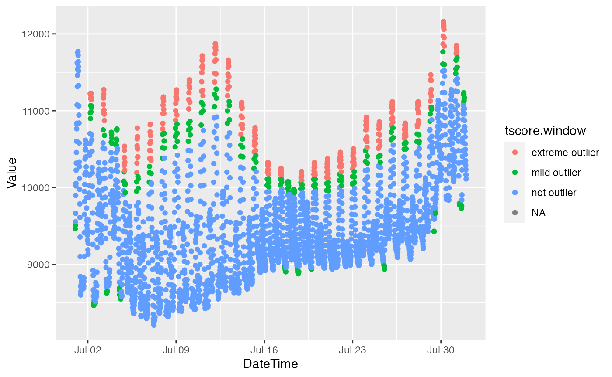
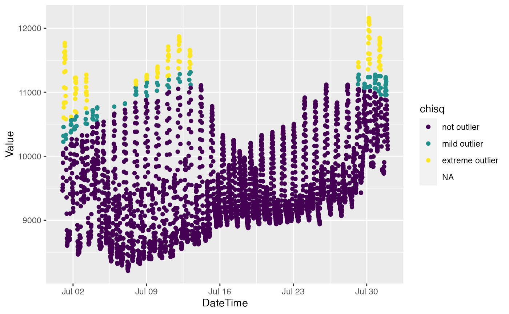
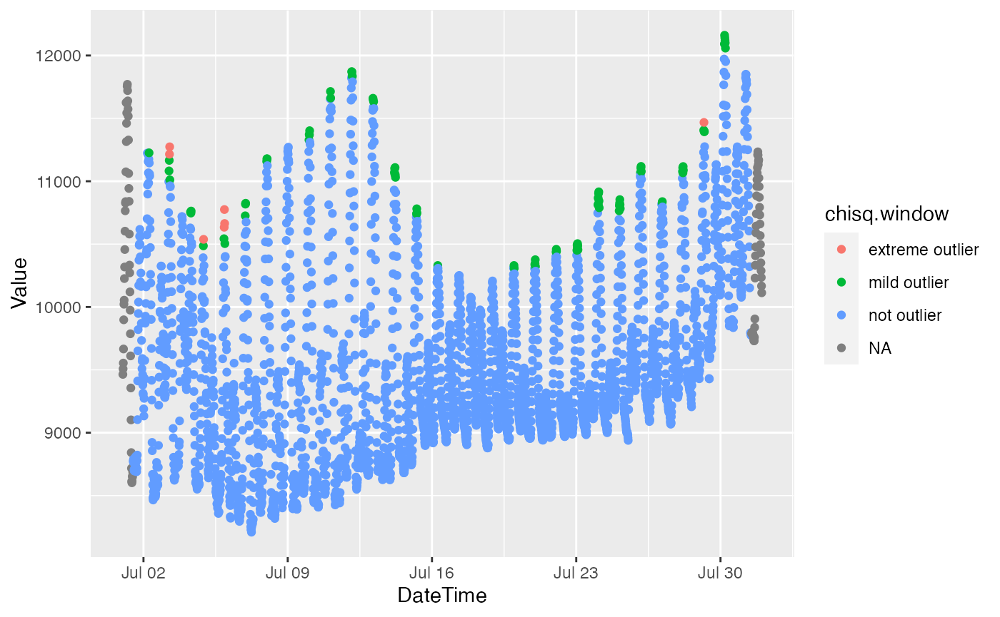

outlier-detection.rmdThis vignette describes functions available for outlier detection, i.e., the detection of data Values outside some specification based on the statistical or structural distribution of Values.
All outlier detection functions follow a similar template of inputs and outputs. All outlier detection functions accept the following arguments:
All functions return an ordered factor tagging each data Value as a non-outlier (1), a mild outlier (2), or an extreme outlier (3). Some outlier detection functions can alternatively return the actual test statistic or score used to classify the data by specifying the argument return.score = TRUE.
ODWGtools provides the following functions for parametric (distribution-based) outlier detection:
outlier_tscore(): outlier detection based on the one-sample t-test. Note that for sample sizes greater than 30, the t-test (t-distribution) approach is equivalent to the z-score (normal distribution) approach.outlier_chisq(): outlier detection based on the \(\chi^2\) distribution.ODWGtools provides the following functions for non-parametric (quantile-based) outlier detection:
outlier_tukey(): Tukey’s test for outliers (interquartile range).outlier_mad(): Outlier detection based on median absolute deviation (MAD).ODWGtools provides the following additional functions for outlier detection:
outlier_lof(): Local Outlier Factor (LOF) test for outliers.outlier_iforest(): outlier detection based on Isolation Forests.outlier_glosh(): Global-Local Outlier Score from Hierarchies (GLOSH) test for outliers.outlier_hdbscan(): outlier detection based on Hierarchical DBSCAN.We use the cder package to download a sample of Belden’s Landing salinity data to demonstrate the outlier detection functions.
library(cder)
bdl = cdec_query("BDL", 100L, "E", "2018-07-01", "2018-08-01")Univariate outlier detection functions are predicated with outlier_.
library(ODWGtools)
bdl["tscore"] = outlier_tscore(bdl$Value)
bdl["tukey"] = outlier_tukey(bdl$Value)
bdl["mad"] = outlier_mad(bdl$Value)Multivariate outlier detection methods are predicated with moutlier_.
bdl["chisq"] = moutlier_chisq(bdl[c("DateTime", "Value")])
bdl["lof"] = moutlier_lof(bdl[c("DateTime", "Value")])## Loading required namespace: dbscan
bdl["iforest"] = moutlier_iforest(bdl[c("DateTime", "Value")])## Loading required namespace: solitude## INFO [19:09:05.384] Building Isolation Forest ...
## INFO [19:09:06.533] done
## INFO [19:09:06.543] Computing depth of terminal nodes ...
## INFO [19:09:07.320] done
## INFO [19:09:07.421] Completed growing isolation forestThe slider package can be used to apply ODWGtools functions to moving windows.
library(slider)
bdl["tscore.window"] = slide_chr(bdl$Value, ~outlier_tscore(.x)[49],
.before = 48, .after = 48)slider performs row-wise iteration over dataframes, so the syntax for using sliding windows with the multivariate outlier detection functions is straightforward provided you pass a dataframe (rather than a list)).
bdl["chisq.window"] = slide_chr(bdl[c("DateTime", "Value")],
~ moutlier_chisq(.x)[49],
.before = 48, .after = 48, .complete = TRUE)
# this won't work
# bdl["chisq.window"] = slide_chr(as.list(bdl[c("DateTime", "Value")]),
# ~ moutlier_chisq(.x)[49],
# .before = 48, .after = 48, .complete = TRUE)Finally, a vignette isn’t really complete without some plots.
library(ggplot2)
ggplot(bdl) + theme_bw() +
aes(x = DateTime, y = Value, color = tscore) +
geom_point()## Warning: Removed 4 rows containing missing values (geom_point).
ggplot(bdl) +
aes(x = DateTime, y = Value, color = tscore.window) +
geom_point()## Warning: Removed 4 rows containing missing values (geom_point).
ggplot(bdl) + aes(x = DateTime, y = Value, color = chisq) + geom_point()## Warning: Removed 4 rows containing missing values (geom_point).
ggplot(bdl) + aes(x = DateTime, y = Value, color = chisq.window) + geom_point()## Warning: Removed 4 rows containing missing values (geom_point).